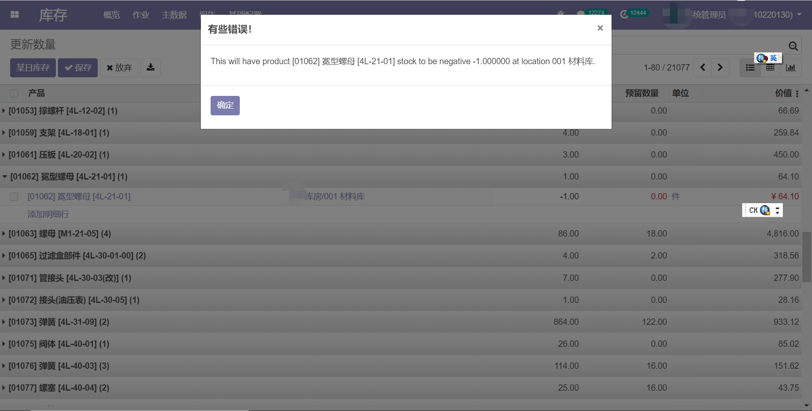

No negative inventory
Odoo originally can have negative inentory.
Please contact lihaibin@dashu-tech.com for any support.

With this app, there will not allow any negative inventory in psyical location
If you already have negative inventory, after you install this app, there will no new negative
inventory and the current negative inventory can only increase its amount to a positive or absolutelly smaller negative.